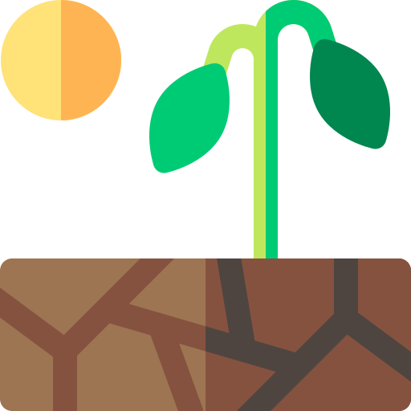
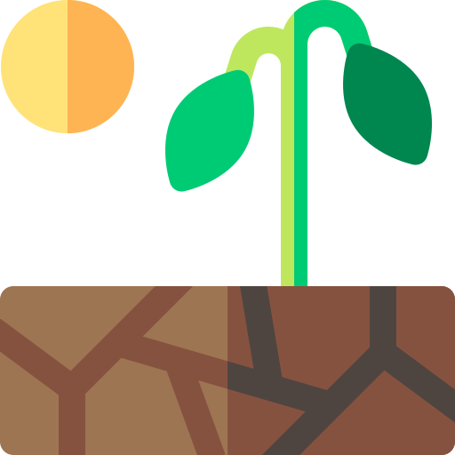

"Biología la Ciencia Natural que estudia
la Vida, los Órganismos y todos los procesos
Biológicos de los Seres Vivos"
 

Introducción Biología
La biología es la ciencia natural que estudia todos los fenómenos y propiedades relacionadas con la vida, lo orgánico y los procesos biológicos de los seres vivos en diversos campos especializados.
La biología se ocupa tanto de la descripción de las características de los organismos individuales, como de las especies consideradas en su conjunto, así como de los mecanismos biológicos propios de los seres vivos y de las interacciones entre ellos y su entorno. De este modo, trata de estudiar la estructura y la dinámica funcional comunes a todos los seres vivos con el fin de establecer las leyes y principios generales que rigen la vida orgánica.
La escala de estudio va desde los subcomponentes biofísicoquímicos hasta los sistemas complejos, los cuales componen los niveles de la organización biológica. La biología moderna se divide en subdisciplinas según los tipos de organismos y la escala en que se los estudia. Por ejemplo, la biología molecular estudia de las biomoléculas fundamentales de los organismos, mientras que la biología celular tiene como objeto el análisis de la célula, que es la unidad constitutiva básica de toda la vida. A niveles más elevados, la anatomía y la fisiología, estudian la estructura y el funcionamiento interno de los organismos, respectivamente, mientras que la taxonomía clasifica los seres vivos y la ecología se ocupa del estudio de los hábitats naturales y su relación con los organismos
respectivamente, mientras que la taxonomía clasifica los seres vivos y la ecología se ocupa del estudio de los hábitats naturales y su relación con los organismos
Niveles de Organización
-
Célula: Unidad mínima estructural y funcinal de los organismos vivos.
-
Tejido: Conjunto de células de las misma naturaleza que desempeñan una función en común.
-
Órgano: Grupo de diversos tejidos que forman una unidad funcional.
-
Aparatos: Sistema de órganos que desempeñan una función particular.
-
Organismo: Resultado de la organización y funcionamiento de los niveles anteriores.
-
Especie: Grupo de series semejantes entre sí.
-
Población: Conjunto de una especie en una área determinada.
Ramas de la Bilogía
-
Anatomía
-
Ecología
-
Botánica
-
Neurobiología
-
Biología Celular o Citología
-
Morfología
-
Fisiología
Video sobre biologia
TEMAS BIOLOGÍA
Bioelementos
Biolementos primarios:
Los constituyen el carbono, hidrogeno, hidrógeno, oxígeno y nitrógeno, conjunto abreviado comúnmente como "CHON".
Bioelementos secundarios:
Los conforman el azufre, fósforo, magnesio, calcio, sodio, potasio y cloro